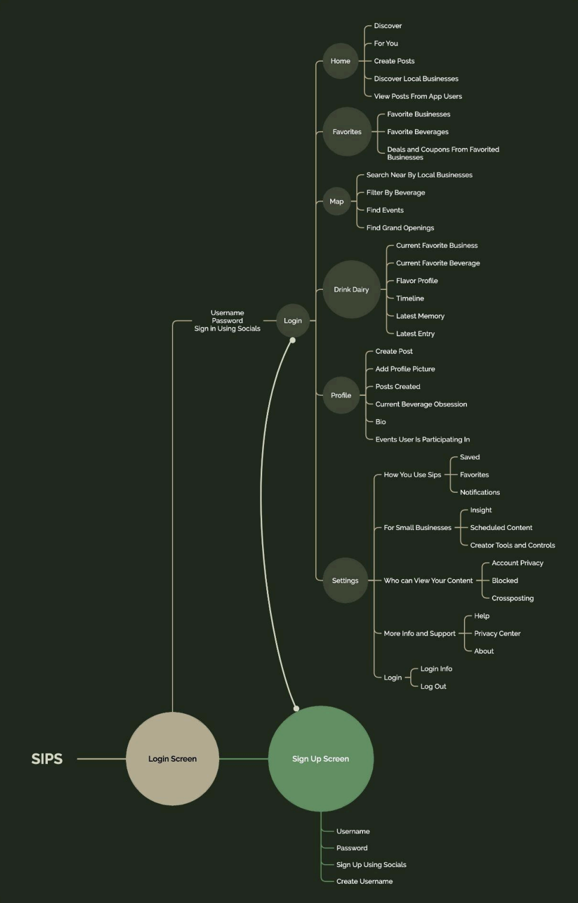
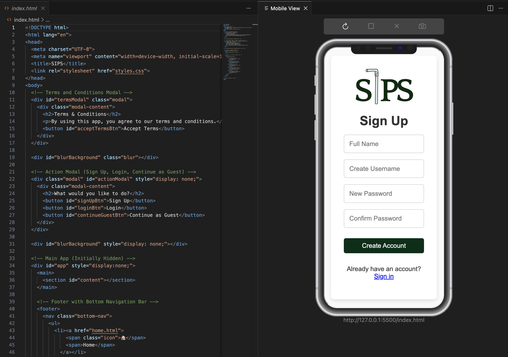

SIPS
SIPS is a mobile first beverage discovery product designed to help users find local drink spots quickly, while giving small businesses more visibility.

A focused way to discover local drinks
I created SIPS to make discovering local beverage spots feel more intuitive, curated, and visually engaging. Instead of relying on scattered recommendations across social media, search engines, and word of mouth, SIPS gives users a more focused place to browse and explore.
Discovery can feel scattered
Finding local drink shops can feel inconsistent. Users often jump between different platforms to compare places, view details, and decide where to go. I wanted to explore how a dedicated mobile experience could make that process simpler, faster, and more enjoyable.
Design a simple product with a clear purpose
My goal was to design a product that felt focused and easy to use. I wanted the experience to feel curated instead of overwhelming.
- Make local drink discovery faster
- Keep the interface clean and easy to scan
- Support small businesses through a dedicated product experience
Step by step product process
Defining the idea
I started by identifying the core concept behind the app. I wanted to create something centered around beverage discovery, but with a more curated and modern feel than traditional search platforms.
I focused on what problem the product was solving, who it was for, and what would make the experience feel different.

Establishing the core experience
Once the idea was clear, I narrowed the product down to its most important actions. This helped keep the product focused instead of overbuilt.
- Browse local beverage spots
- View shop details
- Explore drink options quickly

Planning the user flow
I built the flow around a simple sequence: open, browse, select, and explore. This helped me think through what users needed first and how the interface could guide them without feeling heavy.

Designing the interface in Figma
I designed the app in Figma with a clean, modern direction. I focused on card based layouts, clear hierarchy, consistent spacing, and a lightweight visual style that kept the content easy to scan.
Turning the design into a working frontend
After the visual design phase, I translated the interface into code using HTML, CSS, and JavaScript. This moved the project beyond concept work and helped me test how the design held up in a real environment.

Deploying the product
I hosted the live frontend and backend using Render so the project could exist as an accessible product instead of only a local build or design file.
Connecting the frontend to the backend
A major turning point was integrating the frontend with the backend API. This made the product more dynamic and helped the app behave closer to a real product experience.
- Connected screens to data
- Displayed content dynamically
- Tested how the live product responded
Testing on mobile
I tested the app on mobile devices to evaluate the real experience. This helped me catch spacing issues, layout problems, and interaction details that were not as obvious inside design tools.
What I learned
SIPS helped me understand how a product evolves from an idea into something interactive and testable.
A live product experience
SIPS became one of my strongest projects because it reflects more than visual design. It shows how I think through product structure, usability, implementation, and refinement across the full process.